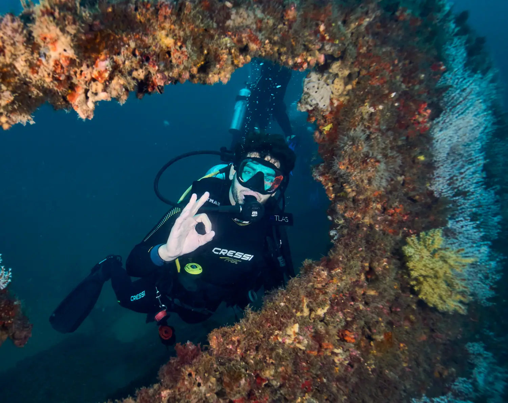
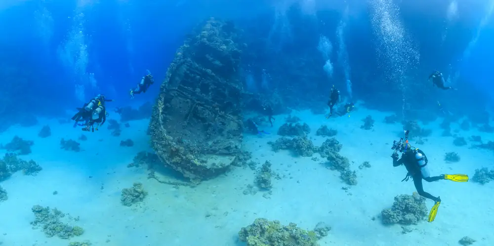

Mapa esquemático
Pontos de mergulho
Laje de Santos, Museu Subaquático e Ilha do Mato.

Mapa esquemático
Escolha um ponto
Mergulho
Turismo no Guarujá
Viagens
Estação do Mar
Toque em um ponto
Escolha um ponto no mapa ou na lista.